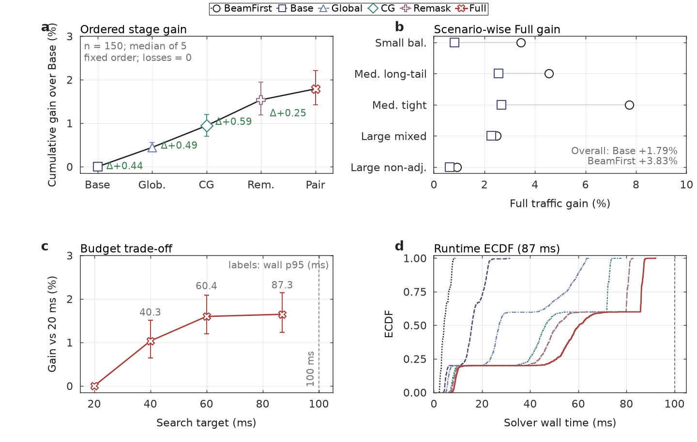
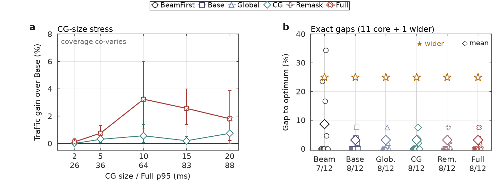

概览
03 · 公开证据
结果不靠一句“更好”，而靠阶段轨迹、压力测试与精确校准。
公开仓库提供实验协议、独立验证器和绘图脚本。下列图展示累积阶段增益、预算—质量权衡、运行时间分布，以及兼容组压力与小规模精确比较。

01
质量与运行时间
◴
02
压力测试与精确校准
✓
Code-only public release这是 code-only 公开版本。历史密封结果与论文正文不在仓库中；所有性能主张应由重新生成的工件或单独提供的证据复核。